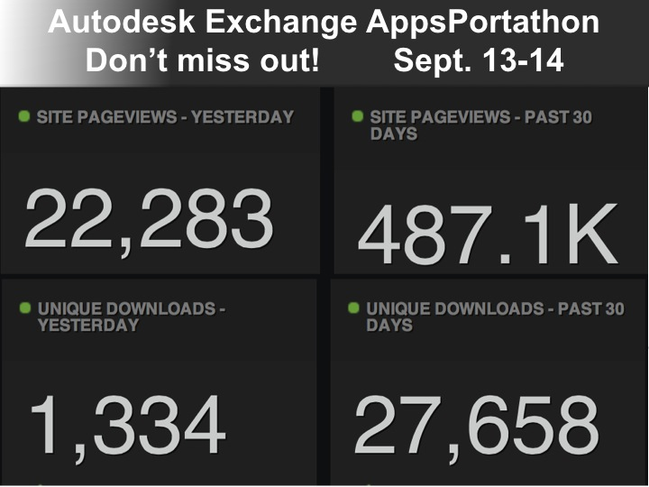
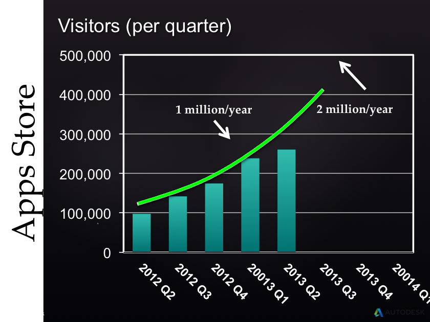
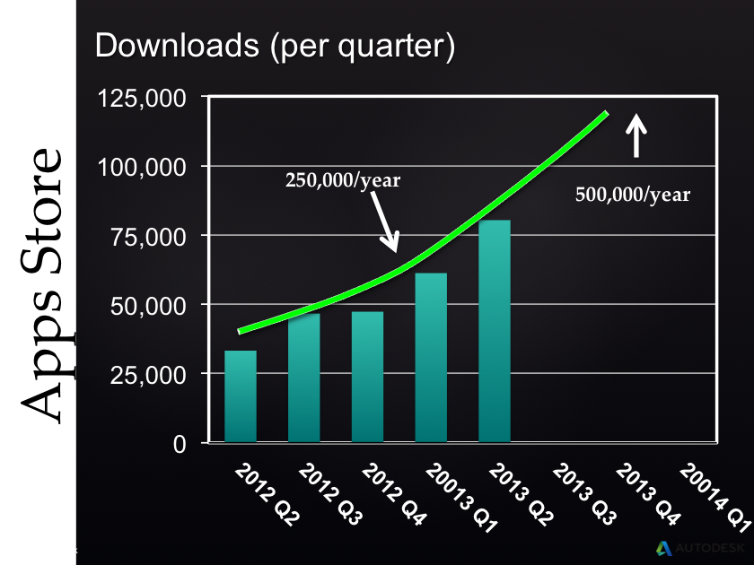
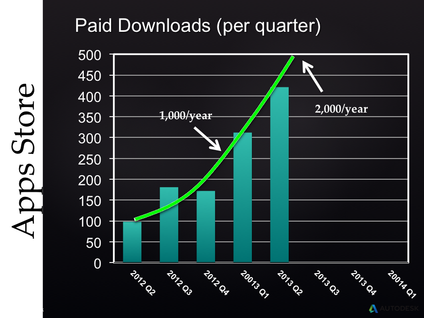
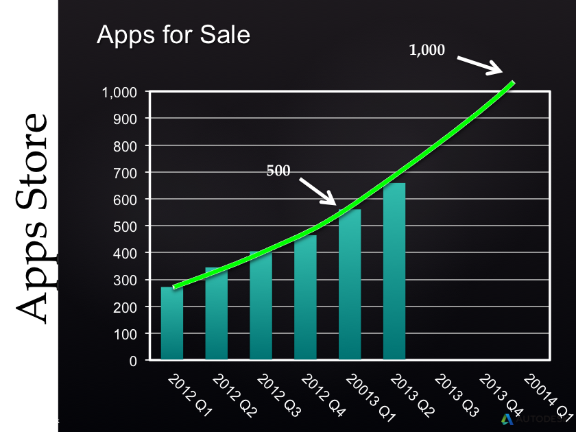
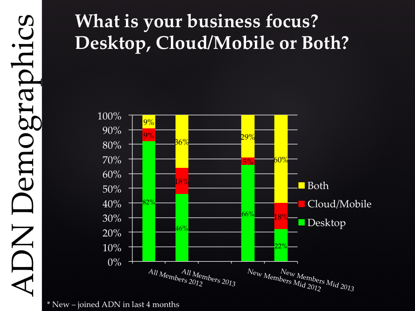
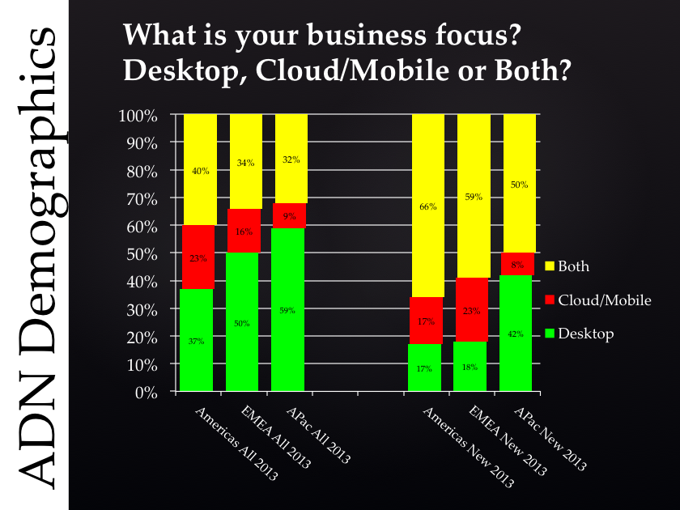

Cloud and AppStore Usage Grows – Portathon Reminder
As you know, we are promoting the use of the Autodesk Exchange AppStore and cloud and mobile technologies.
We have the Portathon coming up end of next week, and you can earn $100 right away, just by submitting an exchange app before it ends:
- Earn $100 submitting an Autodesk Exchange App
- Exchange App tutorial videos
- Portathon reminder and video announcement

Regarding the cloud and mobile side of things, I published my cloud-based 2D Revit model editor (live tech summit recording), showing how to edit and round-trip a simplified 2D view of a Revit model on any mobile device, discussed various other cloud (category page) and mobile (category page) related matters, and we also have an entire dedicated cloud and mobile DevBlog focused the topic.
Well, these efforts are paying off, and the developer focus on these areas is picking up fast.
Here are some numbers I received from Jim Quanci, Director of the Autodesk Developer Network, illustrating this growth.
I hope they encourage you to submit your own apps to the Exchange Store, preferably even before the Portathon event. You will still be eligible for the reward, of course.
Autodesk Exchange AppStore Growth
Here is the number of AppStore visitors per quarter, showing that we will surpass one million visitors per year:

The number of downloads per quarter show that we will exceed 250.000 downloads per year:

The number of paid downloads per quarter is much lower, but still exceeds one thousand per year, well on its way towards two:

The number of AppStore apps for sale now exceeds 500 and is heading for a thousand:

ADN Members Focus on Cloud Development
Jim also presented some demographic data gathered from existing and new ADN membership registrations, asking where their main business focus lies, with a choice between:
- Desktop
- Cloud and mobile
- Both
This data also demonstrates a rapid change and a growing focus on cloud and mobile technologies.
Here is what the ADN members worldwide listed as their main business focus in 2012 and 2013, comparing new members with existing ones:

Unsurprisingly, the new ADN members are significantly more interested in the modern technologies than the existing ones.
Here is a similar comparison between three different large regions of the world, comparing the American, European and Asia Pacific ADN members' business focus in 2013 and splitting up between new and existing ones:

I hope you find these results interesting and inspiring, or scary, depending on where you stand :-)
Finally, I would actually highly recommend getting going with your AppStore apps in advance of the Portathon taking place end of next week, to ensure that you do not get into a rush during the event itself or the last few days before the deadline on September 14.
Good luck and have fun!